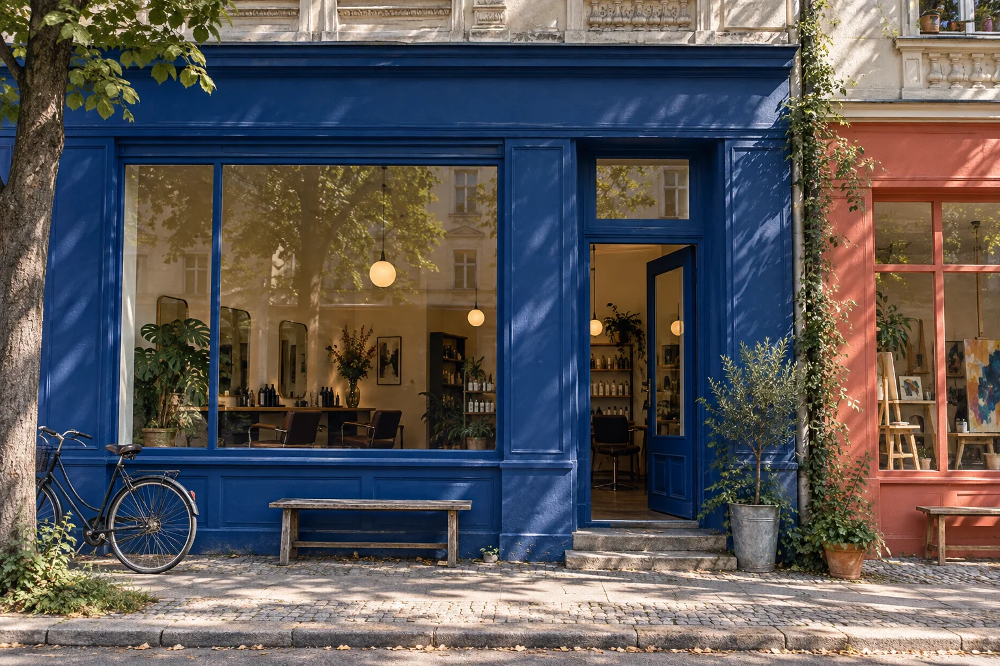

Ein Link. Ein Termin.
Leistung wählen, freie Zeit finden, buchen. Direkt im Browser, ohne ein Kundenkonto anzulegen.

Dein Kiez. Deine Termine.
Die leichte Online-Terminverwaltung für kleine Berliner Betriebe. Weniger organisieren. Mehr Zeit für dein Handwerk.
Buchung ausprobierenOb Salon, Studio oder Beratung: Deine Kundschaft findet einen freien Termin. Du behältst den Überblick.
Leistung wählen, freie Zeit finden, buchen. Direkt im Browser, ohne ein Kundenkonto anzulegen.
Die Bestätigung landet im Postfach. Mit den Termindetails und einem Link zum Stornieren.
Termine einsehen, Zeiten freigeben und Pausen blockieren. An einem Ort für deinen Betrieb.
Ein freier Slot wird zum nächsten Termin. Probier die Buchung aus.
Deine eigene Buchungsseite trägt den Namen und die Informationen deines Betriebs.
Im echten Betrieb erhält deine Kundschaft jetzt die Bestätigung per E-Mail.
Dies war eine Demo. Es wurde nichts gespeichert oder versendet.
Deine Termine, übersichtlich an einem Ort. Vom ersten Kunden bis zum Feierabend.
Terminverwaltung · ausschließlich Beispieldaten
Keine App-Installation. Kein Softwarepaket für Aufgaben, die du gar nicht brauchst. Einfach die Buchung im Browser öffnen.
Browser statt AppCloudflare Turnstile hilft, automatisierte Buchungen abzuwehren. Die Prüfung erfolgt auch auf dem Server, bevor ein Termin angelegt wird.
Cloudflare TurnstileDie Buchungsdaten werden in einer europäischen Datenbank gespeichert. Jeder Betrieb hat seinen eigenen Bereich für seine Termine.
Europäischer DatenbankstandortFür kleine Berliner Betriebe, die mit Terminen arbeiten: etwa Friseursalons, Beauty-Studios oder Beratungsangebote. Leistungen, Dauer und verfügbare Zeiten werden für den jeweiligen Betrieb eingerichtet.
Nein. Die Buchung funktioniert direkt über die Buchungsseite deines Betriebs. Die Kundschaft wählt eine Leistung und eine freie Zeit und gibt ihre Kontaktdaten an.
In der Bestätigungsmail befindet sich ein persönlicher Stornierungslink. Zusätzlich kannst du Termine in der Verwaltung deines Betriebs stornieren.
Der Standort der Buchungsdatenbank liegt in Europa. Das beschreibt den Datenbankstandort, nicht automatisch die gesamte Verarbeitung durch alle beteiligten Dienste, etwa E-Mail-Versand und Sicherheitsprüfung.